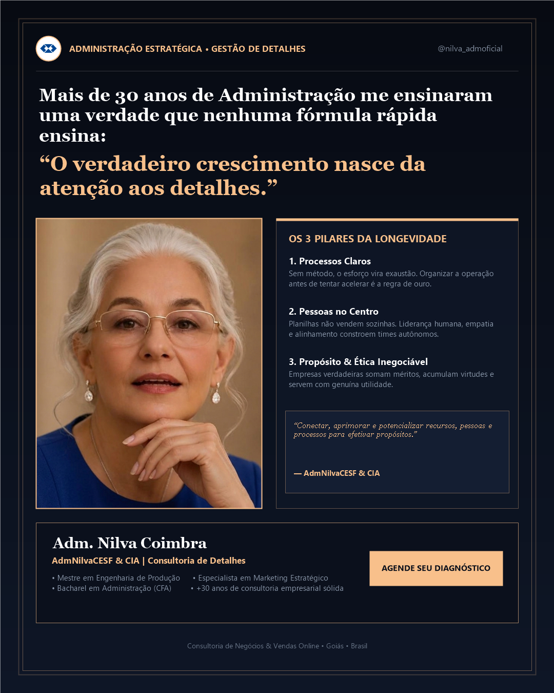

nilva_admoficial

2.180 curtidas
nilva_admoficial Mais de 30 anos dedicados à Administração de Empresas me ensinaram uma verdade que nenhum curso rápido da internet ensina:
O verdadeiro crescimento nasce da atenção aos detalhes.
Na era das fórmulas mágicas e do imediatismo, muitos empresários são seduzidos pela promessa de atalhos. Mas na prática real dos negócios, a solidez de uma empresa é construída em 3 pilares inegociáveis:
1️⃣ Processos Claros: Sem método estruturado, o esforço vira exaustão operacional. Organizar a casa antes de tentar acelerar é a regra de ouro.
2️⃣ Pessoas no Centro: Planilhas e tecnologias não vendem sozinhas. Liderança humana, empatia e clareza de papéis constroem equipes autônomas.
3️⃣ Propósito & Ética: Negócios longevos somam méritos, acumulam virtudes e servem com utilidade genuína aos seus clientes e à sociedade.
A minha missão é clara: conectar, aprimorar e potencializar recursos, pessoas e processos para efetivar propósitos.
Se a sua empresa precisa sair da sobrecarga operacional e construir um caminho seguro e lucrativo:
👉 Envie uma mensagem no direct ou acesse o link da bio para agendar sua rodada de Diagnóstico Estratégico.
Com carinho,
AdmNilvaCESF & CIA | Consultoria de Detalhes 🕊️
---
#administracao #consultoriadedetalhes #gestaoempresarial #liderancahumana #nilvacoimbra #admnilvacesf #processos #proposito #economiacriativa #goias
HÁ 1 HORA